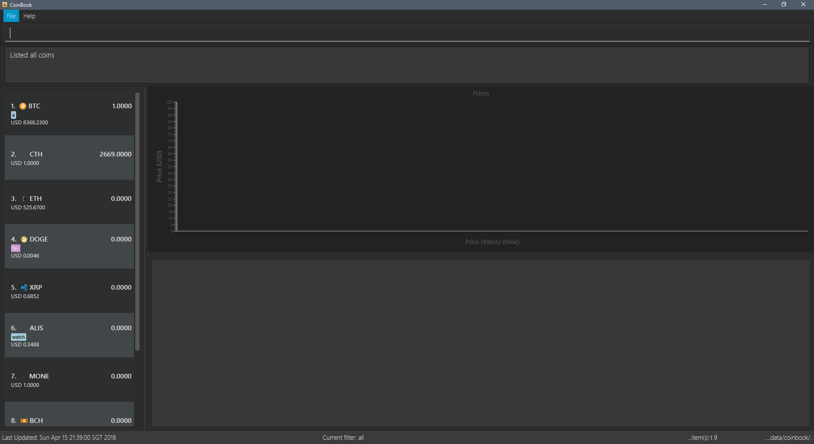

By: Team CS2103JAN2018-F09-B3 Since: Feb 2018 Licence: MIT
- 1. How to Use this Guide
- 2. Introduction
- 3. Quick Start
- 4. Features
- 4.1. Viewing help :
help/? - 4.2. Buying Coin for an account:
buy/b[coming in v1.5] - 4.3. Selling Coin from an account:
sell/s[coming in v1.5] - 4.4. Listing all Coin accounts :
list/l - 4.5. Locating Coin accounts:
find/f[coming in v1.5] - 4.6. Viewing details of an account :
view/v - 4.7. Listing entered commands :
history/h - 4.8. Undoing previous command :
undo/u - 4.9. Redoing the previously undone command :
redo/r - 4.10. Clearing all entries :
clear/c - 4.11. Tagging an entry :
tag/t - 4.12. Setting up notifications :
notifyme/n[coming in v1.5] - 4.13. Ordering the information
order/o[coming in v1.5] - 4.14. Updating the information :
update/u[coming in v1.5] - 4.15. Exiting the program :
exit/q - 4.16. Saving the data
- 4.17. Autocomplete
[coming in v1.5] - 4.18. Encrypting data files
[coming in v2.0]
- 4.1. Viewing help :
- 5. FAQ
- 6. Command Summary
- Appendix A: Glossary
1. How to Use this Guide
- Markup
-
Text with special meaning look different. Here are the various types:
-
Commands, filenames, and other miscellaneous keywords are
monospaced for emphasis -
Glossary terms have a dotted underline
-
Keyboard keys are marked like this
-
Q means to press the
Qkey -
Ctrl+Q means to hold down the
Ctrlkey and then press theQkey -
CtrlQE means to press the
Ctrlkey, then press theQkey, followed by theEkey; holding down is not required
-
-
Links are marked blue with underline
-
2. Introduction
CoinBook is a desktop application that is made for users who prefer to work on a mouse-free, command line platform with minimal graphical user interface (GUI) dependence.
Coinbook allows you to store a portfolio of your cryptocurrency purchases as well as track the latest price trends and news, in addition to providing various tools to simplify and expedite your management process such as profit calculation.
3. Quick Start
-
Ensure you have Java version
1.8.0_60or later installed in your Computer.Having any Java 8 version is not enough.
This app will not work with earlier versions of Java 8.
You can obtain the latest version here (Download JRE). -
Download the latest
addressbook.jarhere. -
Copy the file to the folder you want to use as the home folder for your CoinBook.
-
Double-click the file to start the app. The GUI should appear in a few seconds. (Fig. 1)
Figure 1. Startup Window -
Type your commands in the command box and press Enter to execute it.
e.g. typinghelpand pressing Enter will open the help window. -
Some example commands you can try:
-
list: lists all Coins -
buyBTC 3: adds 3 coins to the BTC account -
viewBTC: view the details of the BTC account -
exit: exits the app
-
-
Alternatively, you can type replace commands by their aliases which are shorter to achieve the same effect. For example:
-
l: lists all accounts
-
-
Refer to Section 4, “Features” for details of each command. Command aliases are specified after the
/symbol.
4. Features
4.2. Buying Coin for an account: buy / b [coming in v1.5]
buy {INDEX, NAME, CODE} VALUE
Adds value into the specified Coin account.
buy BTC 0.5
4.3. Selling Coin from an account: sell / s [coming in v1.5]
Removes value from a given Coin account.
Format: sell {INDEX, NAME, TAG} VALUE
Example:
* sell BTC 0.5
4.4. Listing all Coin accounts : list / l
Shows a list of all Coin accounts in the CoinBook.
Format: list
4.5. Locating Coin accounts: find / f [coming in v1.5]
Finds coin accounts whose details satisfy the query.
Format: find QUERY [LOGICAL_OPERATORS QUERY]…
Examples:
-
find BTC
Returns the account named BTC. -
find tag fav
Returns any accounts with the "fav" tag. -
find (price > 500 AND tag fav) OR amount < 20
Returns any accounts that either currently cost more than 500 dollars and was previously tagged as FAV, or which the the account has less than 20 Coins left.
4.6. Viewing details of an account : view / v
Selects the account identified by the index number used in the most recent listing.
Format: view INDEX
Examples:
-
list
select 2
Selects the 2nd Coin account in the address book. -
find BTC
select 1
Selects the 1st Coin account in the results of thefindcommand.
4.7. Listing entered commands : history / h
Lists all the commands that you have entered in reverse chronological order.
Format: history
|
Pressing the ↑ and ↓ arrows will display the previous and next input respectively in the command box. |
4.8. Undoing previous command : undo / u
Restores the address book to the state before the previous undoable command was executed.
Format: undo
|
Undoable commands: those commands that modify the address book’s content ( |
Examples:
-
buy BTC 10
list
undo(reverses thebuy BTC 10command) -
select 1
list
undo
Theundocommand fails as there are no undoable commands executed previously. -
sell BTC 10
clear
undo(reverses theclearcommand)
undo(reverses thesell BTC 10command)
4.9. Redoing the previously undone command : redo / r
Reverses the most recent undo command.
Format: redo
Examples:
-
buy BTC 10
undo(reverses thebuy BTC 10command)
redo(reapplies thebuy BTC 10command) -
list
redo
Theredocommand fails as there are noundocommands executed previously. -
sell BTC 10
clear
undo(reverses theclearcommand)
undo(reverses thesell BTC 10command)
redo(reapplies thesell BTC 10command)
redo(reapplies theclearcommand)
4.10. Clearing all entries : clear / c
Clears all entries from the CoinBook.
Format: clear
4.11. Tagging an entry : tag / t
Adds a tag attribute to an entry in the CoinBook, so that they can be grouped for other commands.
Format: tag {INDEX, NAME} TAG_NAME
Example:
tag 1 fav
tag 3 fav
tag 5 fav
The first, third, and fifth entry in the list is now tagged with the fav attribute.
| A Coin account can have any number of tags (including 0) |
| Bear in mind that if multiple items are tagged, then the command will be applied to all accounts under the same tag. |
4.12. Setting up notifications : notifyme / n [coming in v1.5]
Sets a condition that triggers a desktop notification when met.
Format: notifyme {INDEX, NAME, TAG} CONDITION [LOGICAL_OPERATOR CONDITION]…
Example:
-
notifyme 1 price > 50
When the price of the first entry has exceeded 50 dollars, a desktop notification will be triggered.
4.13. Ordering the information order / o [coming in v1.5]
Orders or sorts the Coin listing based on fields such as: name, price, amount held etc.
Format: order OPTION/{a, d}…
Example:
-
order p/a
TheCoinlisting is now ordered in ascending order based on their prices+ -
order p/d n/a
TheCoinlisting is now ordered in descending order based on their prices first, then if two coins have the same price, they will be sorted by name in ascending order.
4.14. Updating the information : update / u [coming in v1.5]
Obtains the latest prices and refreshes the news feed using the Internet.
Format: update
4.15. Exiting the program : exit / q
Exits the program.
Format: exit
4.16. Saving the data
CoinBook data are saved in the hard disk automatically after any command that changes the data.
There is no need to save manually.
4.17. Autocomplete [coming in v1.5]
Pressing Tab will autocomplete the field where the cursor is at with a matching suggestion. Subsequent Tab key presses will cycle through the list of suggestions.
4.18. Encrypting data files [coming in v2.0]
{explain how the user can enable/disable data encryption}
5. FAQ
Q: How do I transfer my data to another Computer?
A: Install the app in the other computer and overwrite the empty data file it creates with the file that contains the data of your previous Address Book folder.
6. Command Summary
-
Add :
add n/NAME a/AMOUNT [t/TAG]… -
Buy :
buy {INDEX, NAME, TAG} VALUE -
Sell :
sell {INDEX, NAME, TAG} VALUE -
List :
list -
Find :
find QUERY [LOGICAL_OPERATORS QUERY]… -
Select :
select INDEX -
History :
history -
Undo :
undo -
Redo :
redo -
Clear :
clear -
Notifyme :
notifyme {INDEX, NAME, TAG} CONDITION [LOGICAL_OPERATOR CONDITION]… -
Update :
update -
Exit :
exit
Appendix A: Glossary
- Alias
-
Alternate names for commands.
- Coinmarketcap
-
A website that hosts Cryptocurrency information, including cap rankings, prices, volumes and circulating supplies.
- Cryptopanic
-
An online news platform for cryptocurrencies.
- Exponential moving average
-
A moving average window of closing prices over a past period that places more weight on the more recent days considered. Since cryptocurrencies do not have a closing price, this defaults to their price at 23:59:59 at the timezone of the exchange.
- Graphical User Interface
-
A type of user interface that lets users interact with the app through visual indicators, icons, mouse actions, etc. as compared to typed commands.
- Moving Average Convergence Divergence (MACD)
-
Moving Average Convergence Divergence is an indicator that is the difference between two moving averages.
- Macros
-
A set of commands that can be executed under a single custom command is a macro. For example, if a user wishes to only view coins of a specific tag in a certain sorted order, he can set create a custom macro (e.g.
sortfavourites) such that upon entering it at a command, the program will internally first call thesearchcommand on the user set tags, then call thesortcommand. - Mainstream OS
-
Windows, Linux, Unix, OS-X
- Resistance Lines
-
When the price of a coin has risen to a certain amount, the price may eventually sustain its value at this point for a period of time. This is when it obtains "resistance".
- Relative Strength Index
-
Relative Strength Index is used as an indicator to compare the current strength of cryptocurrency versus its historical strength. The strength is calculated based on the closing prices over a period of time.
- Sensitive Data
-
Refers to data that is not meant to be shared with others.
- Simple Moving Average
-
A moving average window of closing prices over a past period that places equal weight on all days considered. Since cryptocurrencies do not have a closing price, this defaults to their price at 23:59:59 at the timezone of the exchange.
- Support lines
-
When the price of a coin has fallen to a certain amount, the price may eventually sustain its value at this point for a period of time. This is when it obtains "support".